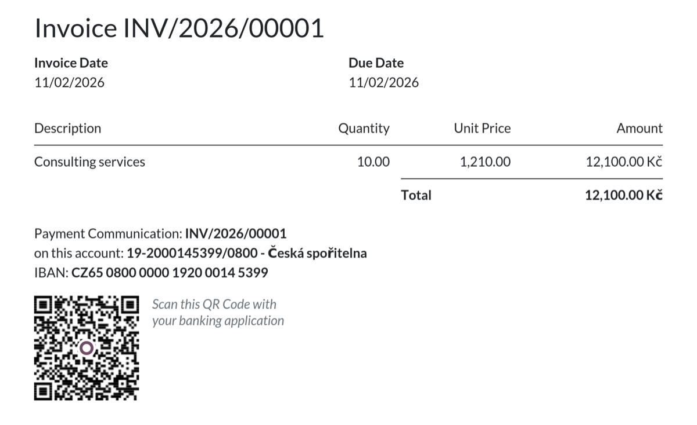
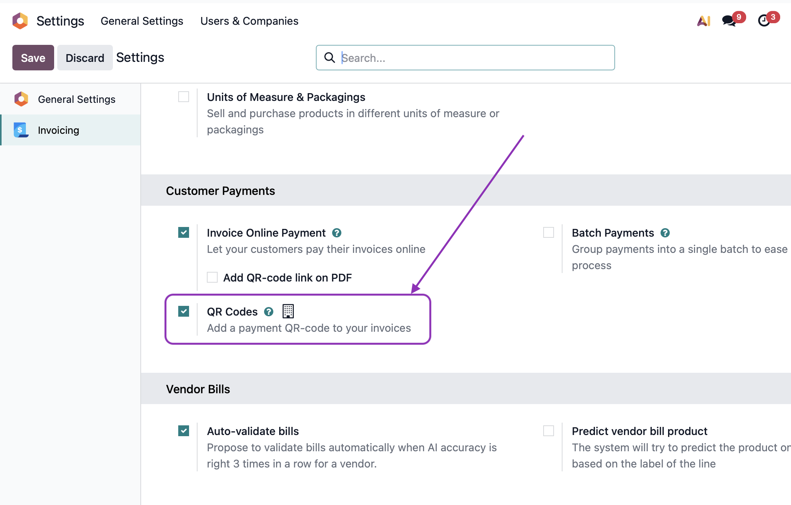

Your customers scan the QR code with their Czech banking app and the payment is filled in for them: account, amount, variable symbol, due date and message.
CZ65 0800 0000 1920 0014 5399: the QR code requires it, and with the Czech format
123-456/0800 the invoice gets no QR code. Your customers still see the familiar account
number: the module extends the standard invoice report to print the Czech format derived from the IBAN,
e.g. 19-2000145399/0800, with the IBAN on the next line.
QR Platba (SPAYD) is the Czech Banking Association standard for payment QR codes, read by Czech banking apps.
The module adds it as a standard Odoo payment QR method, like the SEPA QR code. It appears in the usual place on the invoice PDF and in the customer portal, on unpaid customer invoices in CZK.
For a Czech IBAN, the invoice prints the account number in the Czech format,
e.g. 19-2000145399/0800, and the IBAN on the next line. Customers who pay by hand
can use the format their banking app accepts.
The Czech format is taken from the IBAN according to CNB Decree No. 169/2011 Coll., so both always identify the same account as the QR code.

The QR code contains the IBAN, the amount due, the due date, the payment reference as the message, the recipient name and the variable symbol made of the digits of the invoice number.
The QR method is the same as in the Czech localization of Odoo 20: when you migrate to Odoo 20, uninstall this module. Odoo 20 prints only the IBAN on the invoice; the Czech account number is a feature of this module and disappears with it.
CZ65 0800 0000 1920 0014 5399,
in Contacts > Configuration > Bank Accounts or in your bank journal (Bank Account Number).
The Czech format 123-456/0800 is not supported, but the invoice prints it for you.The QR code is shown only on unpaid CZK invoices, not on credit notes and paid invoices. QR Platba allows at most 10 digits in the variable symbol, so keep your invoice numbering within 10 digits.

Version 19.0.2.x replaces the module's own QR code with the standard Odoo QR method.
Go through the points below before you upgrade. If you can't do it now, stay on 19.0.1.0.0
and don't replace the module files yet; that version stays available as the tag
ash_cz_qr_payment-19.0.1.0.0 in the GitHub repository ash-technology/l10n_cz_extra.
| 19.0.1.x | 19.0.2.x | |
|---|---|---|
| Account | the first company bank account in CZK (or without a currency); version 19.0.1.x ignored the account on the invoice | the account printed on the invoice |
| Account format | the Czech format 123-456/0800 was converted to IBAN by the module |
must be entered as IBAN; with the Czech format, the invoice gets no QR code. The invoice still prints the Czech format, next to the IBAN |
| Send Money | not checked | required: Odoo does not process an invoice with an untrusted company account, and automated processes remove such an account from the invoice, so it gets no QR code |
Before you upgrade
Other changes
How to upgrade
Replace the module files and upgrade the module right away (Apps > Upgrade): between these two steps, printing invoices fails. Odoo.sh upgrades the module automatically when you push the new version to the repository.
Module updates don't propagate changes to a copy of the invoice report (e.g. from Odoo Studio,
typically account.report_invoice_document_copy_1). The report then has to be edited manually.
You can do it in developer mode: Settings > Technical > User Interface > Views,
open the report and change its Architecture. Change only the parts described in the following
points and check the result by printing an invoice.
The copy still contains the old QR code block, and printing fails with
'account.move' object has no attribute 'get_cz_qr_code_base64'. In the architecture:
<t t-set="cz_qr_base64" t-value="o.get_cz_qr_code_base64()"/>
<t t-if="cz_qr_base64">
<div id="qrcode" class="d-flex mb-3 avoid-page-break-inside">
<div class="qrcode me-3">
<img t-att-src="'data:image/png;base64,%s' % cz_qr_base64" style="width:140px;height:140px;"/>
</div>
<div class="d-inline text-muted lh-sm fst-italic">
<p class="fw-bold mb-0" style="color: black;">QR Platba</p>
<p>Scan this QR Code with<br/>your banking application</p>
</div>
</div>
</t><div id="qrcode" … t-if="o.display_qr_code and o.amount_residual">
is wrapped in <t t-else=""> and </t>: remove these two tags,
but keep the div. This div prints the working QR code.A copy made before you installed this version of the module prints only the IBAN. Replace this part:
<t t-if="o.partner_bank_id">
<br/> on this account: <span t-field="o.partner_bank_id" class="fw-bold"/>
</t>
with:
<t t-if="o.partner_bank_id">
<br/> on this account: <span t-if="not o.partner_bank_id._get_cz_acc_number()" t-field="o.partner_bank_id" class="fw-bold"/>
<t t-else="">
<span class="fw-bold"><span class="text-nowrap" t-out="o.partner_bank_id._get_cz_acc_number()"/><t t-if="o.partner_bank_id.bank_id"> - <t t-out="o.partner_bank_id.bank_id.name"/></t></span>
<br/>IBAN: <span class="fw-bold text-nowrap" t-field="o.partner_bank_id.acc_number"/>
</t>
</t>
The text "on this account:" stays as it is, so its translation is kept.
A copy that contains _get_cz_acc_number fails to print once the module is uninstalled.
Before you uninstall it, put the original part back: replace the block from case 2
with the first snippet of case 2.
The QR code is not appearing on my invoices
Make sure QR Codes is enabled (Invoicing > Configuration > Settings). On the invoice, select CZK QR in the Payment QR-code field (Other Info tab): Odoo then tells you what is missing, e.g. the account is not an IBAN.
Printing fails with "'account.move' object has no attribute 'get_cz_qr_code_base64'"
Your invoice report is a copy made with version 19.0.1.x. See Copies of the invoice report, case 1.
The invoice shows only the IBAN, not the Czech account number
Either the Recipient Bank of the invoice is not a Czech IBAN (starting with CZ), or you print invoices with a copy of the invoice report. See Copies of the invoice report, case 2.
The invoice shows a QR code that opens a web page
That is a different feature: the QR code for paying online via the customer portal (payment providers). It is enabled by the Add QR-code link on PDF setting and does not depend on this module.
Which currencies are supported?
QR Platba codes are generated for invoices in CZK only. Invoices in other currencies use the other QR methods of Odoo, e.g. the SEPA QR code for EUR.
This module is developed and maintained by Ash technology s.r.o., an official Odoo partner based in the Czech Republic.
The code of the QR method is taken from the czk_qr method of the l10n_cz module
of Odoo 20.0 Community (© Odoo S.A., LGPL-3) and adapted to Odoo 19.
This module is free and open-source. We welcome your feedback and feature requests – if your idea benefits the community, we're happy to include it.
Contact us:
Web: www.ashtechnology.eu
Email: info@ashtechnology.eu
Odoo is a trademark of Odoo S.A.